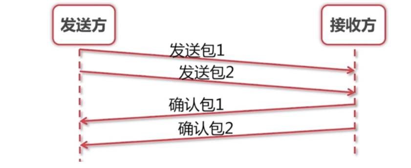
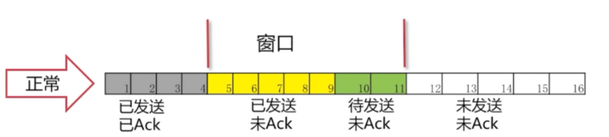
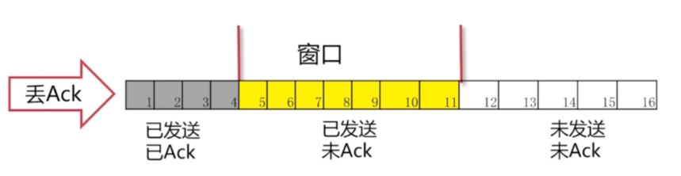
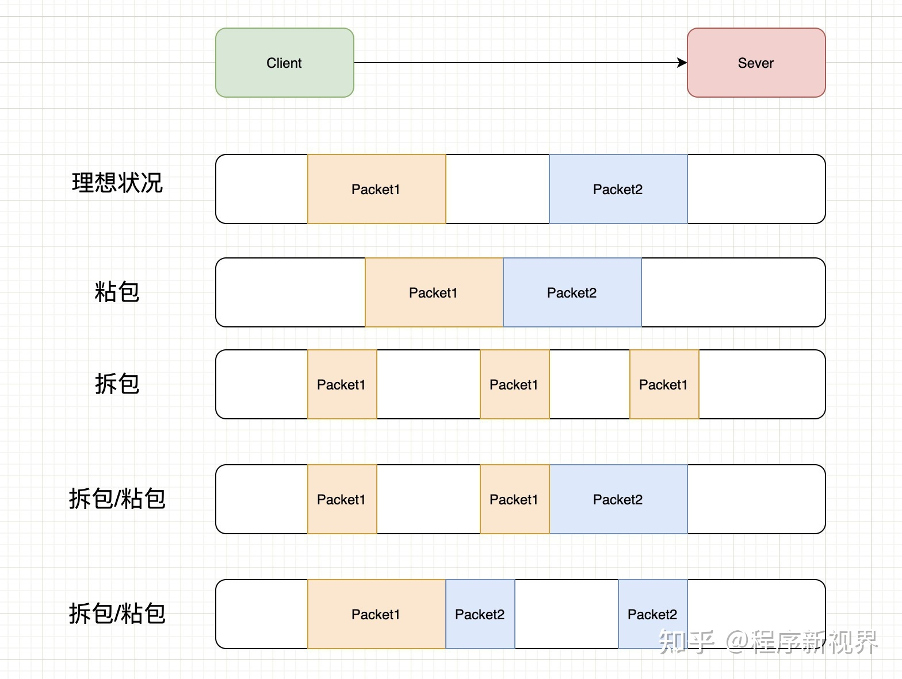

[toc]
滑动窗口
我们先来看发送方与接收方之间，两者之间的交互

如图，这个就是我们把两个包一起发送，然后一起确认。我们改善了吞吐量的问题
问题：我们每次需要发多少个包过去呢？发送多少包是最优解呢？
我们能不能把第一个和第二个包发过去后，收到第一个确认包就把第三个包发过去呢？而不是去等到第二个包的确认包才去发第三个包。这样就很自然的产生了我们"滑动窗口"的实现。

在图中，我们可看出灰色1号2号3号包已经发送完毕，并且已经收到Ack。这些包就已经是过去式。4、5、6、7号包是黄色的，表示已经发送了。但是并没有收到对方的Ack，所以也不知道接收方有没有收到。8、9、10号包是绿色的。是我们还没有发送的。这些绿色也就是我们接下来马上要发送的包。 可以看出我们的窗口正好是11格。后面的11-16还没有被读进内存。要等4号-10号包有接下来的动作后，我们的包才会继续往下发送。
正常情况

可以看到4号包对方已经被接收到，所以被涂成了灰色。“窗口”就往右移一格，这里只要保证“窗口”是7格的。 我们就把11号包读进了我们的缓存。进入了“待发送”的状态。8、9号包已经变成了黄色，表示已经发送出去了。接下来的操作就是一样的了，确认包后，窗口往后移继续将未发送的包读进缓存，把“待发送“状态的包变为”已发送“。
丢包情况
有可能我们包发过去，对方的Ack丢了。也有可能我们的包并没有发送过去。从发送方角度看就是我们没有收到Ack。

发生的情况：一直在等Ack。如果一直等不到的话，我们也会把读进缓存的待发送的包也一起发过去。但是，这个时候我们的窗口已经发满了。所以并不能把12号包读进来，而是始终在等待5号包的Ack。
超时重发
这里有一点要说明：这个Ack是要按顺序的。必须要等到5的Ack收到，才会把6-11的Ack发送过去。这样就保证了滑动窗口的一个顺序。

这时候可以看出5号包已经接受到Ack，后面的6、7、8号包也已经发送过去已Ack。窗口便继续向后移动。
这个与gateway的滑动窗口限流有点不一样 , gateway的限流是会丢弃流量的, tcp的滑动窗口不会丢弃, 都在后面排队
一篇带你读懂TCP之“滑动窗口”协议 - Coder编程 - 博客园 (cnblogs.com)
TCP滑动窗口 - alifpga - 博客园 (cnblogs.com)
粘包和拆包
TCP 协议是流式协议。所谓流式协议，即协议的内容是像流水一样的字节流，内容与内容之间没有明确的分界标志，需要我们人为地去给这些协议划分边界。
A 与 B 进行 TCP 通信，A 先后给 B 发送了一个 100 字节和 200 字节的数据包，B 可能收到以一次或者多次任意形式的总数为 300 字节, 对于 B 来说，如果不人为规定多少字节作为一个数据包，B 每次是不知道应该把收到的数据中多少字节作为一个有效的数据包的，而规定每次把多少数据当成一个包就是协议格式定义的内容之一。

粘包
有的面试官可能会这么问：网络通信时，如何解决粘包、丢包或者包乱序问题？
如果是 TCP 协议，在大多数场景下，是不存在丢包和包乱序问题的，TCP 通信是可靠通信方式，TCP 协议栈通过序列号和包重传确认机制保证数据包的有序和一定被正确发到目的地；
如果是 UDP 协议，如果不能接受少量丢包，那就要自己在 UDP 的基础上实现类似 TCP 这种有序和可靠传输机制了（例如 RTP 协议、RUDP 协议）。所以，问题拆解后，只剩下如何解决粘包的问题。
如果一次请求发送的数据量比较小，没达到缓冲区大小，TCP则会将多个请求合并为同一个请求进行发送，这就形成了粘包问题。
接收端收到粘包后, 如何正确的分包呢?
分包方法
固定包长的数据包
即每个协议包的长度都是固定的。举个例子，例如我们可以规定每个协议包的大小是 64 个字节，每次收满 64 个字节，就取出来解析（如果不够，就先存起来）。
这种通信协议的格式简单但灵活性差。如果包内容不足指定的字节数，剩余的空间需要填充特殊的信息，如 ；如果包内容超过指定字节数，又得分包分片，需要增加额外处理逻辑——在发送端进行分包分片，在接收端重新组装包片（分包和分片内容在接下来会详细介绍）。
以指定字符（串）为包的结束标志
这种协议包比较常见，即字节流中遇到特殊的符号值时就认为到一个包的末尾了。例如，我们熟悉的 FTP协议，发邮件的 SMTP 协议，一个命令或者一段数据后面加上" “（即所谓的 CRLF）表示一个包的结束。对端收到后，每遇到一个” “就把之前的数据当做一个数据包。
这种协议一般用于一些包含各种命令控制的应用中，其不足之处就是如果协议数据包内容部分需要使用包结束标志字符，就需要对这些字符做转码或者转义操作，以免被接收方错误地当成包结束标志而误解析。
包头 + 包体格式
这种格式的包一般分为两部分，即包头和包体，包头是固定大小的，且包头中必须含有一个字段来说明接下来的包体有多大。例如:
struct msg_header
{
int32_t bodySize;
int32_t cmd;
};
这就是一个典型的包头格式，bodySize 指定了这个包的包体是多大。由于包头大小是固定的（这里是 size(int32_t) + sizeof(int32_t) = 8 字节），对端先收取包头大小字节数目（当然，如果不够还是先缓存起来，直到收够为止），然后解析包头，根据包头中指定的包体大小来收取包体，等包体收够了，就组装成一个完整的包来处理。在有些实现中，包头中的 bodySize可能被另外一个叫 packageSize 的字段代替，这个字段的含义是整个包的大小，这个时候，我们只要用 packageSize 减去包头大小（这里是 sizeof(msg_header)）就能算出包体的大小，原理同上。
解包与处理
这里我们以 包头 + 包体 这种格式的数据包来说明。处理流程如下：

拆包
如果一次请求发送的数据量比较大，超过了缓冲区大小，TCP就会将其拆分为多次发送，这就是拆包。
拆包之后, 可能只发送了一部分包, 这种包也称为半包.
Netty对粘包和拆包问题的处理
Netty对解决粘包和拆包的方案做了抽象，提供了一些解码器（Decoder）来解决粘包和拆包的问题。如：
LineBasedFrameDecoder：以行为单位进行数据包的解码 (这种其实就是以特殊符号结尾作为标识)；DelimiterBasedFrameDecoder：以特殊的符号作为分隔来进行数据包的解码；FixedLengthFrameDecoder：以固定长度进行数据包的解码；LenghtFieldBasedFrameDecode：适用于消息头包含消息长度的协议（最常用）；ByteToMessageDecoder: 根据你的协议具体格式重写 decode() 方法来对数据包解包